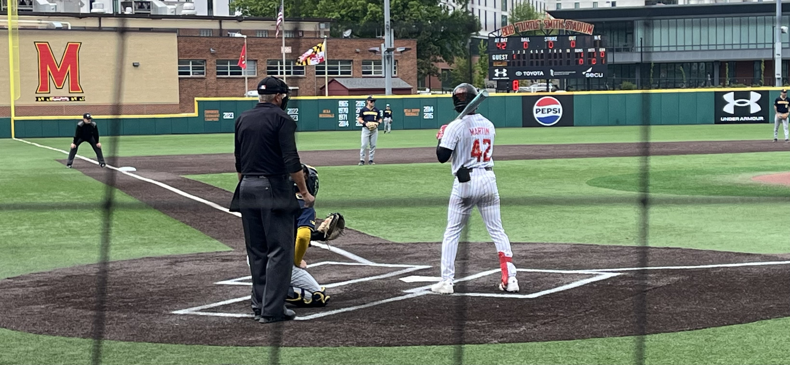
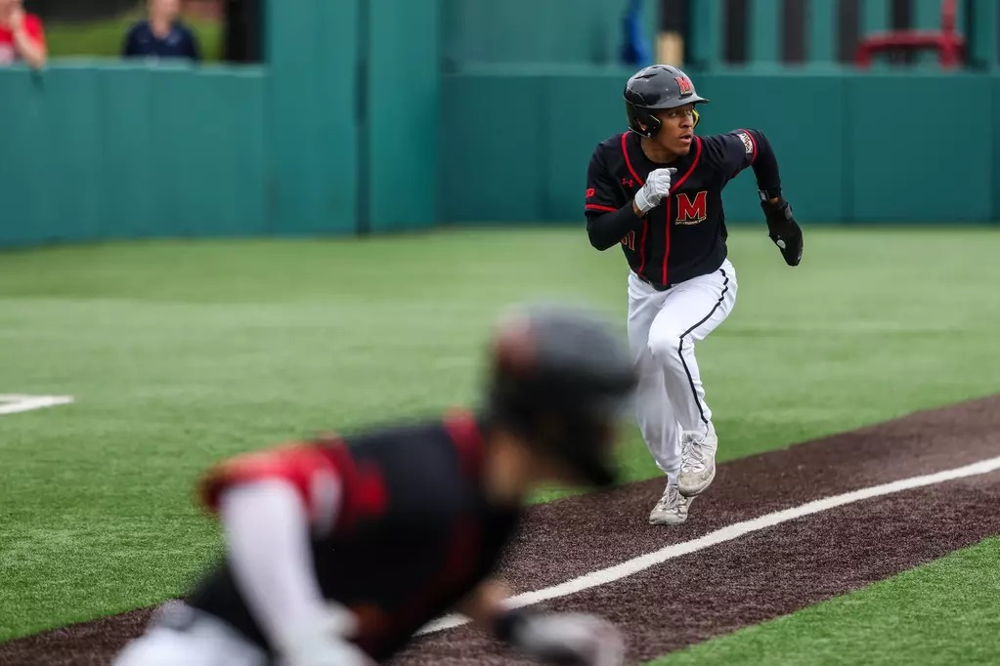

Brayden Martin at-bat versus Michigan at The Bob in College Park, Md. on Staurday, May 2, 2026. Joe Wagman
Maryland baseball may have just found its next legacy. Junior utility player Brayden Martin has been the star for the Terps this season, breaking record after record in his third year with the program.
Martin, a Prince George’s County native, first joined the Terps in 2023. However, his recruitment process wasn’t anything ordinary.
Martin originally committed to Florida State in his sophomore year of high school, but a coaching change in the Seminoles’ program left him searching for a new school with only a few months left of his senior year. He began talking to James Madison and Ohio State before receiving a call from Maryland head coach Matt Swope.
“The moment I picked up the phone, I knew I was going (to Maryland),” Martin said. “All the things (Swope) talked about, hitting-wise, maximizing my hitting as I was a pretty good hitter in high school, that was very interesting for me and made me want to go here even more.”
Swope, a Maryland baseball alum, member of the coaching staff for the last 14 years, and Prince George’s County native himself, had known about Martin for years before he arrived at Maryland.
“Before the rules changed last year, I was starting to recruit kids at eighth and ninth grade, so my relationship with them was long,” said Swope. “I’d be talking to them for three and four sometimes before they committed.”
Martin went to St. John’s High School, just eight miles from College Park. The local high school was one Swope knew well, being so close to campus and once a rival of his in high school. That being the case, when Swope found out about Martin’s situation, he knew he had to reach out.
“It was very late in the process, but I’d done a bunch of homework on him and known him for so long,” Swope said. “I watched him for so long, it was more of a blessing, I think, for both of us to kind of come connected.”
Since he arrived at Maryland in 2023, Martin has stayed loyal to the program, which can be rare nowadays with many collegiate athletes transferring schools year after year.
Martin said that his loyalty to the program has been encouraged by Swope’s willingness to bring him in at the last minute, being so close to home, and by his uncle, Terps basketball alum Walt Williams.
“You know, with the volatility, with the portal, all the changes, even that we've had in the program, I'm big on the legacy part,” Swope said. “What I want for players like him and my players is to always feel like they have some place to come back to.”
Over his three-year career so far at Maryland, Martin has surely made his mark on the field both offensively and defensively.

Maryland Baseball vs. Penn State at The Bob in College Park, Md. on Friday, May. 17, 2024. Brieanna Andrews/Maryland Terrapins
In his freshman season, Martin started 51 out of 56 games for the Terps, batting .266 with 51 hits, 24 RBIs and 30 walks. He also finished fourth on the team with 16 multi-hit games.
In the following 2025 season, he took another step forward and became a leading contributor to Maryland’s offense. Martin finished his sophomore season with a .319 batting average, 67 hits, a 30-game on-base streak and a team-leading 21 multi-hit games. He also led the Big Ten with 59 walks, something that he has done better than almost everyone in Maryland baseball history.
Martin hits a double against Michigan on May 1, 2026, extending his on-base streak to 46 games to start the 2026 season and his overall streak to 76 games.
Martin’s 30-game on-base streak to end the 2025 season was just the start of one of Maryland’s most consistent streaks at the plate in program history.
“In meetings that me and Swope or assistant coaches have, I talk a lot about being consistent, not that I do good or whatever,” said Martin. “The more times I get on base, the more times we win.”
That 2025 streak is one that Martin has continued into this year. The junior reached base in a program-record 46 consecutive games to start the 2026 season, extending his overall streak to 76 games. Martin’s consistency at the plate has earned him free rein to steer his own at-bats, a rare privilege given from Swope.
“He's the only player I'm not giving signs to, so it's one of those things where we're lock in step,” said Swope. “I can let him go, ‘Hey take, swing if you want, it's kind of your situation.’”
Martin continued to build off his first two years of success into his third and has become arguably Maryland’s premier performer on offense. So far through 48 starts this season, Martin leads the team with a .354 batting average, 68 hits, 49 runs and 43 walks. Additionally, Martin has set new career highs with 12 doubles, 35 RBIs and 18 stolen bases.
Martin’s 43 walks on the season once again have him leading the Big Ten for the second straight year. Not only is he sitting atop the category for the conference, but Martin is also quickly approaching Maryland’s program record for career walks as he sits second all-time with 132 total. Martin only trails former Terp Luke Shigler, who leads the program with 138.
“A lot of people ask me if I try to walk,” Martin said. “It’s definitely something I don’t try to do, but that would be something that would be cool, to have a legacy here, and my name would still be here when I’m gone.”
Offense isn't the only thing Martin brings to the field, however. Over his tenure with the Terps, Martin has been the ultimate utility piece for the team, being able to play multiple positions in the infield and outfield.
“I think he's someone where he just wakes up and he has the mentality of a ‘Coach, wherever you put me, I'm good,’ and (that’s) also rare,” said Swope.
“He’s been here for three years now, so he’s had ample amount of reps both in the infield and outfield, and just having him be that swiss army knife for us has been super important for our success,” said Maryland assistant coach Tommy Gardiner.
Having played mostly leftfield and shortstop in highschool, Martin had a headstart with his ability to play both infield and outfield, but coaches have made sure he continues to grow in both positions.
“This year, what really stuck out to me is his first step and reaction at third base, some of the plays that he's been able to make, especially forehand and backhand to dive, get up, and make a good throw; he's always had a really good internal clock with that factor,” Gardiner said.
With just over two weeks left in Maryland’s regular season, Martin’s time with the Terps may soon be coming to an end, as there is a realistic possibility that he hears his name called in this summer’s MLB draft.
Playing professional baseball has always been Martin's dream.
“I tell a lot of people I’ve been delusional since I was a little kid,” Martin said. “People say that I can’t do this or do that, but I’ve always thought that I can do whatever I put my mind to.”
Martin isn’t trying to reach the next level just for himself; he wants it for his family as well.
“I got twin little brothers now, too, that kind of look up to me, so it would be cool for them to see that and see that it's possible to do it,” said Martin.
However, if Martin doesn’t hear his name called in July, Swope would love to have him back for a senior season.
“Obviously, I hope he gets a chance to get drafted this year, but if he doesn't, obviously, we would be super glad and thankful that he was back, because we'd love to have him back next year,” said Swope.
For now though, Martin is just focused on doing whatever he can to help Maryland reach its first Big Ten Tournament appearance since 2023.
“If I can get to the Big Ten Tournament, something here that people haven’t seen… in three years, then that’d be something cool to see before I got off to my next journey,” Martin said.